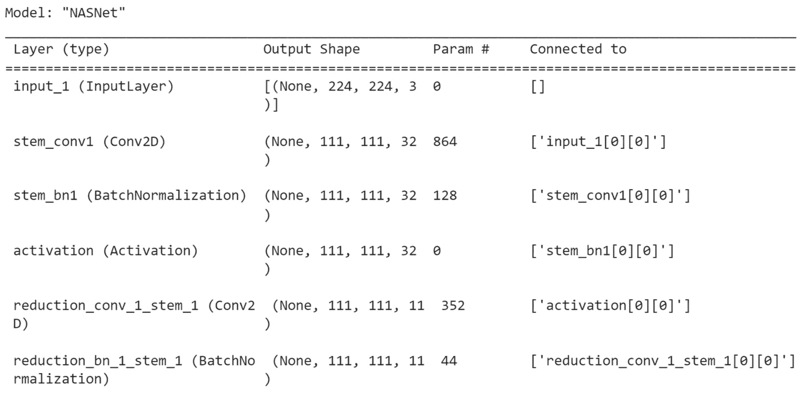
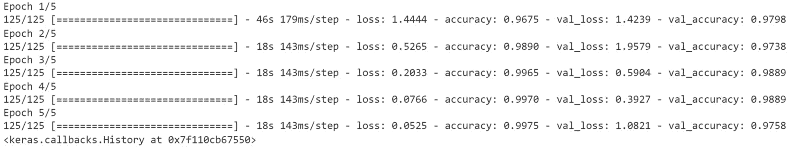
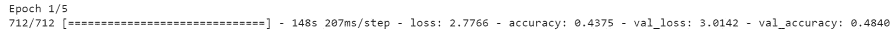

在本章中，您将分析预训练模型。您将获得使用TensorFlow上不同的最先进模型架构的实践经验。您将探索迁移学习和微调等概念，并查看TensorFlow Hub及其发布的深度学习资源。
本章结束时，您将能够直接从TensorFlow和TensorFlow Hub使用预训练模型。
简介
在前一章中，您学习了卷积神经网络(CNN)如何分析图像，并学习相关模式来分类其主要对象或识别其中的对象。您还看到了用于此类模型的不同类型的层。
但是，如果您可以使用预先计算的权重重用现有模型，而不是从头开始训练模型，那么效率会更高。这正是转移学习和微调的作用所在。在本章中，您将学习如何将这些技术应用到您自己的项目和数据集中。
您还将了解ImageNet竞赛和相应的数据集，深度学习研究人员使用这些数据集来根据最先进的算法对他们的模型进行基准测试。最后，您将学习如何使用TensorFlow Hub的资源来构建自己的模型。
ImageNet
ImageNet是一个大型数据集，包含超过1400万张经过注释的图像，用于图像分类或对象检测。2007年，费和她的团队首次对其进行了整合。目标是建立一个计算机视觉研究人员可以从中受益的数据集。
该数据集于2009年首次展示，自2010年以来，每年都会举办一次名为 ImageNet大规模视觉识别挑战赛 ( ILSVRC )的年度比赛，以完成图像分类和对象检测任务。
图8.1:来自ImageNet的图像示例
多年来，一些最著名的CNN架构(如AlexNet、Inception、VGG和ResNet)在这次ILSVRC竞赛中取得了惊人的成绩。在下图中，您可以看到一些最著名的CNN架构在此次竞赛中的表现。在不到10年的时间里，性能从50%的准确性提高到几乎90%。
图8.2:paperswithcode.com的模型基准
在下一节中，您将看到如何在这些模型中使用迁移学习。
迁移学习
在前一章中，你已经得到了为图像分类目的训练不同CNN模型的实践机会。即使你取得了很好的结果，模型也花了相当长的时间来学习相关的参数。如果你继续训练这些模特，你会取得更好的成绩。使用图形处理单元(GPU)可以缩短训练时间，但仍然会花费一点时间，尤其是对于更大或更复杂的数据集。
深度学习研究人员为了社区的利益发布了他们的工作。每个人都可以通过采用现有的模型架构并定制它们而受益，而不是从头开始设计架构。不仅如此，研究人员还分享他们模型的权重。然后，您不仅可以重用一个架构，还可以利用在其上执行的所有培训。这就是迁移学习的意义所在。通过重用预先训练的模型，您不必从头开始。这些模型在ImageNet等大型数据集上接受训练，并学会了如何识别数千种不同类别的对象。您可以重用这些开箱即用的先进模型，而无需对它们进行培训。是不是很神奇？现在，您只需使用一个现有的模型，而不是花数周时间来训练一个模型。
TensorFlow在其Keras API中提供了一个在ImageNet数据集上预先训练的最新模型列表，用于迁移学习。
注意
您可以在以下链接中找到TensorFlow中可用的预训练模型的完整列表:https://www . tensor flow . org/API _ docs/python/TF/keras/applications。
在TensorFlow中导入预训练模型非常简单，如以下示例所示，其中您加载了InceptionV3模型:
import tensorflow as tf from tensorflow.keras.applications import InceptionV3
现在您已经为预训练模型导入了类，您需要通过指定输入图像的尺寸和imagenet作为要加载的预训练权重来实例化它:
model = InceptionV3(input_shape=(224, 224, 3), \
weights='imagenet', include_top=True)
include_top=True参数指定您将重复使用与ImageNet上训练的原始模型完全相同的顶层(这是最后一层)。这意味着最后一层用于预测该数据集中的1，000个类。
现在，您已经实例化了预训练模型，您可以根据它进行预测:
model.predict(input_image)
如果您希望使用此预训练模型来预测不同于ImageNet中的类别，则需要将顶层替换为另一个层，该层将被训练来识别输入数据集的特定类别。
首先，您需要通过指定include_top=False来删除该层:
model = InceptionV3(input_shape=(224, 224, 3), \
weights='imagenet', include_top=False)
在前面的例子中，您已经加载了一个InceptionV3模型。下一步将是冻结该模型的所有层，这样它们的权重将不会更新:
model.trainable = False
在此之后，您将实例化一个新的全连接层，其单元数和激活函数由您选择。在下面的示例中，您希望预测50个不同的类。为此，创建一个带有20单位的密集层，并使用softmax作为激活函数:
top_layer = tf.keras.layers.Dense(20, activation='softmax')
然后，您需要使用Keras的顺序API将这个完全连接的层添加到您的基本模型中:
new_model = tf.keras.Sequential([model, top_layer])
现在，您可以训练这个模型，只有顶层权重会被更新。所有其他层都被冻结了:
new_model.compile(loss='sparse_categorical_crossentropy', \
optimizer=tf.keras.optimizers.Adam(0.001))
new_model.fit(X_train, t_train, epochs=50)
在短短几行代码中，您已经加载了Inception V3模型，这是一个最先进的模型，在2016年赢得了ILSVRC竞赛。您学习了如何使它适应您自己的项目和数据集。
在下一个练习中，您将进行迁移学习的实践。
练习8.01:用迁移学习对猫和狗进行分类
在本练习中，您将使用迁移学习来正确地将图像分类为猫或狗。您将使用TensorFlow中已有的预训练模型NASNet-Mobile。该模型带有ImageNet上预先训练的重量。
注意
本练习中使用的原始数据集由Google提供。它包含了25000张狗和猫的图片。可以在这里找到:https://storage . Google APIs . com/mledu-datasets/cats _ and _ dogs _ filtered . zip。
- 打开新的Jupyter笔记本。
- 导入张量流库:
import tensorflow as tf
- 创建一个名为
file_url的变量，包含一个到数据集的链接:file_url = 'https://storage.googleapis.com'\ '/mledu-datasets/cats_and_dogs_filtered.zip'
- 使用
tf.keras.get_file下载数据集，以'cats_and_dogs.zip'、origin=file_url和extract=True为参数，并将结果保存到名为zip_dir:zip_dir = tf.keras.utils.get_file('cats_and_dogs.zip', \ origin=file_url, extract=True)的变量中 - 导入
pathlib库:import pathlib
- 使用
pathlib.Path(zip_dir).parent:path = pathlib.Path(zip_dir).parent / 'cats_and_dogs_filtered'
创建一个名为path的变量，包含到cats_and_dogs_filtered目录的完整路径 - 创建两个名为
train_dir和validation_dir的变量，它们分别采用train和validation文件夹的完整路径:train_dir = path / 'train' validation_dir = path / 'validation'
- 创建四个名为
train_cats_dir、train_dogs_dir、validation_cats_dir和validation_dogs_dir的变量，它们分别是训练集和验证集的cats和dogs文件夹的完整路径:train_cats_dir = train_dir / 'cats' train_dogs_dir = train_dir /'dogs' validation_cats_dir = validation_dir / 'cats' validation_dogs_dir = validation_dir / 'dogs'
- 导入
os包。在下一步中，您需要计算文件夹中图像的数量:import os
- 创建两个名为
total_train和total_val的变量，用于获取训练集和验证集的图像数量:total_train = len(os.listdir(train_cats_dir)) \ + len(os.listdir(train_dogs_dir)) total_val = len(os.listdir(validation_cats_dir)) \ + len(os.listdir(validation_dogs_dir))
- 从
tensorflow.keras.preprocessing导入ImageDataGenerator:from tensorflow.keras.preprocessing.image import ImageDataGenerator
- 实例化两个
ImageDataGenerator类，分别命名为train_image_generator和validation_image_generator。这些将通过除以255:train_image_generator = ImageDataGenerator(rescale=1./255) validation_image_generator = ImageDataGenerator(rescale=1./255)
来重新缩放图像 - 创建三个名为
batch_size、img_height和img_width的变量，分别取值为16、224和224:batch_size = 16 img_height = 224 img_width = 224
- 使用
flow_from_directory()方法创建一个名为train_data_gen的数据生成器，并指定批量大小、训练文件夹的路径、目标的大小以及类的模式:train_data_gen = train_image_generator.flow_from_directory\ (batch_size = batch_size, \ directory = train_dir, \ shuffle=True, \ target_size = (img_height, img_width), \ class_mode='binary')
- 使用
flow_from_directory()方法创建一个名为val_data_gen的数据生成器，并指定批处理大小、验证文件夹的路径、目标的大小以及类的模式:val_data_gen = validation_image_generator.flow_from_directory\ (batch_size = batch_size, \ directory = validation_dir, \ target_size=(img_height, img_width), \ class_mode='binary')
- 将
numpy导入为np，tensorflow导入为tf，从tensorflow.keras:import numpy as np import tensorflow as tf from tensorflow.keras import layers
导入layers - 为NumPy和TensorFlow:
np.random.seed(8) tf.random.set_seed(8)
设置8(这完全是任意的)为seed - 从
tensorflow.keras.applications:from tensorflow.keras.applications import NASNetMobile
导入NASNETMobile型号 - 用ImageNet权重实例化模型，移除顶层，并指定正确的输入尺寸:
base_model = NASNetMobile(include_top=False, \ input_shape=(img_height, img_width, 3),\ weights='imagenet')
- 冻结这个模型的所有图层:
base_model.trainable = False
- Print a summary of the model using the
summary()method:base_model.summary()
预期产出如下:
图8.3:模型总结
- 创建一个新的模型，将
NASNETMobile模型与两个新的顶层结合起来，其中500和1单元以及ReLu和sigmoid作为激活函数:model = tf.keras.Sequential([base_model,\ layers.Flatten(), layers.Dense(500, \ activation='relu'), layers.Dense(1, \ activation='sigmoid')])
- 通过提供
binary_crossentropy作为loss函数、一个学习率为0.001的Adam优化器和accuracy作为要显示的指标来编译模型:model.compile(loss='binary_crossentropy', \ optimizer=tf.keras.optimizers.Adam(0.001), \ metrics=['accuracy'])
- Fit the model, provide the train and validation data generators, and run it for five epochs:
model.fit(train_data_gen, \ steps_per_epoch = total_train // batch_size, \ epochs=5, \ validation_data = val_data_gen, \ validation_steps = total_val // batch_size)预期产出如下:

图8.4:模型训练输出
您可以观察到，该模型在训练集和验证集上分别获得了0.99和0.98的准确度分数。考虑到您只训练了最后两层，并且只花了不到一分钟的时间，这是一个相当了不起的结果。这就是应用迁移学习和使用预先训练的最先进模型的好处。
在下一节中，您将看到如何对预训练模型进行微调。
微调
以前，您使用迁移学习来利用您自己的数据集上的预训练模型。您使用了在ImageNet等大型数据集上训练过的最先进模型的权重。这些模型学习了相关参数来识别图像中的不同模式，并帮助您在不同的数据集上获得惊人的结果。
但是这种方法有一个问题。如果你试图预测的类与ImageNet的类属于同一个列表，迁移学习通常工作得很好。如果是这种情况，从ImageNet学习的权重也将与您的数据集相关。例如，前面练习中的cats和dogs类出现在ImageNet中，因此它的权重也与这个数据集相关。
但是，如果您的数据集与ImageNet非常不同，那么来自这些预训练模型的权重可能并不全都相关。例如，如果您的数据集包含卫星图像，并且您正在尝试确定一所房子的屋顶上是否安装了太阳能电池板，这与ImageNet相比将会非常不同。最后一层的权重对于ImageNet中的类来说是非常特定的，例如猫须或车轮(对于卫星影像数据集来说不是很有用)，而早期层的权重则更加通用，例如用于检测形状、颜色或纹理(可应用于卫星影像数据集)。
因此，最好仍然利用早期图层的一些权重，但训练最终图层，以便您的模型可以学习与数据集相关的特定模式并提高其性能。
这种技术被称为微调。背后的想法很简单:你冻结早期层，只更新最终层的权重。让我们看看如何在TensorFlow中实现这一点:
- 首先，实例化一个没有顶层的预训练
MobileNetV2模型:from tensorflow.keras.applications import MobileNetV2 base_model = MobileNetV2(input_shape=(224, 224, 3), \ weights='imagenet', include_top=False)
- 接下来，遍历第一层，通过将它们设置为不可训练来冻结它们。在下面的例子中，你将只冻结第一个
100层:for layer in base_model.layers[:100]: layer.trainable = False
- 现在您需要将您的自定义顶层添加到您的基础模型中。在下面的例子中，您将预测20个不同的类，因此您需要添加一个由具有softmax激活功能的
20单元组成的全连接层:prediction_layer = tf.keras.layers.Dense(20, activation='softmax') model = tf.keras.Sequential([base_model, prediction_layer])
- Finally, you will compile and then train this model:
model.compile(loss='sparse_categorical_crossentropy', \ optimizer = tf.keras.optimizers.Adam(0.001)) model.fit(features_train, label_train, epochs=5)这将显示许多日志，如下面的屏幕截图所示:

图8.5:预训练MobileNetV2模型的微调结果
就是这样。您刚刚对预训练的MobileNetV2模型执行了微调。您已经使用了来自ImageNet的前100个预训练权重，并且仅根据您的数据集更新了第100层以后的权重。
在下一个活动中，您将把刚刚学到的知识付诸实践，并对预先训练好的模型进行微调。
activity8.01:带有微调的水果分类
最初由 Horea Muresan和Mihai Oltean分享的Fruits 360数据集(https://arxiv.org/abs/1712.00580)包含120种不同类型水果的82，000多张图像，使用深度学习从图像中识别水果，Acta Univ. Sapientiae，Informatica Vol. 10，Issue 1，pp. 26-42，2018 。您将使用包含16，000多幅图像的数据集子集。训练集和验证集中的图像数量分别为11398和4752。
在这项活动中，你的任务是训练一个NASNetMobile模型来识别不同种类水果的图像(分为120个不同的类别)。您将使用微调来训练该模型的最后几层。
注意
数据集可以在这里找到:http://packt.link/OFUJj。
以下步骤将帮助您完成此活动:
- 使用TensorFlow导入数据集并解压缩文件。
- 创建一个数据生成器，增加以下数据:
Rescale = 1./255, rotation_range = 40, width_shift_range = 0.1, height_shift_range = 0.1, shear_range = 0.2, zoom_range = 0.2, horizontal_flip = True, fill_mode = 'nearest
- 从TensorFlow加载预训练的
NASNetMobile模型。 - 冻结模型的第一个
600层。 - Add two fully connected layers on top of
NASNetMobile:–带有
Dense(1000, activation=relu)的完全连接层–带有
Dense(120, activation='softmax')的全连接层 - 指定一个学习率为
0.001的Adam优化器。 - 训练模型。
- Evaluate the model on the test set.
预期产出如下:

图8.6:活动的预期产出
注意
此活动的解决方案可通过此链接找到。
现在您已经知道如何使用TensorFlow中的预训练模型，您将在下一节中了解如何从TensorFlow Hub访问模型。
张量流枢纽
TensorFlow Hub是由Google、NVIDIA和Kaggle等出版商共享的TensorFlow模块的存储库。TensorFlow模块是基于TensorFlow构建的独立模型，可重复用于不同的任务。简单来说就是对外收集已发布的TensorFlow模块，用于迁移学习和微调。通过TensorFlow Hub，您可以访问不同的深度学习模型或权重，而不是直接从TensorFlow的核心API提供的模型或权重。
注意
你可以在这里找到更多关于TensorFlow Hub的信息:https://tfhub.dev/。
为了使用它，您首先需要安装它:
pip install tensorflow-hub
一旦安装完毕，您可以通过指定到模块的链接，用load()方法加载可用的分类模型:
import tensorflow_hub as hub
MODULE_HANDLE = 'https://tfhub.dev/tensorflow/efficientnet'\
'/b0/classification/1'
module = hub.load(MODULE_HANDLE)
在前面的例子中，您已经加载了在ImageNet上训练的 EfficientNet B0 模型。您可以在TensorFlow Hub页面找到更多详细信息:https://tfhub . dev/tensor flow/efficient net/B0/classification/1。
注意
TensorFlow Hub提供了一个搜索引擎来查找特定的模块:https://tfhub.dev/s?subtype=module,placeholder。
默认情况下，从TensorFlow Hub加载的模块包含没有激活功能的模型的最后一层。出于分类的目的，您需要添加一个您选择的激活层。为此，您可以使用Keras的顺序API。你只需要用KerasLayer类将你的模型转换成Keras层:
import tensorflow as tf
model = tf.keras.Sequential([
hub.KerasLayer(MODULE_HANDLE,input_shape=(224, 224, 3)),
tf.keras.layers.Activation('softmax')
])
然后，您可以使用您的最终模型来执行预测:
model.predict(data)
您刚刚使用TensorFlow Hub的模型执行了迁移学习。这与您之前使用Keras API所学的非常相似，在Keras API中，您使用include_top=True加载了整个模型。借助TensorFlow Hub，您可以访问预先训练好的模型库，用于对象检测或图像分割。
在下一节中，您将学习如何从TensorFlow Hub预训练模块中提取特征。
特征提取
TensorFlow Hub提供了下载没有最终图层的模型的选项。在这种情况下，您将使用TensorFlow模块作为特征提取器；您可以在此基础上设计您的自定义最终图层。在TensorFlow Hub中，用于特征提取的模块称为特征向量:
import tensorflow_hub as hub
MODULE_HANDLE = 'https://tfhub.dev/google/efficientnet/b0'\
'/feature-vector/1'
module = hub.load(MODULE_HANDLE)
注意
要在TensorFlow Hub上找到所有可用的特征向量，可以使用它的搜索引擎:https://tfhub.dev/s?module-type=image-feature-vector&TF-version = tf2。
加载后，您可以使用顺序API将自己的最终图层添加到特征向量中:
model = tf.keras.Sequential([
hub.KerasLayer(MODULE_HANDLE, input_shape=(224, 224, 3)),
tf.keras.layers.Dense(20, activation='softmax')
])
在前面的例子中，您添加了一个带有softmax激活功能的20单元的完全连接层。接下来，您需要编译和训练您的模型:
model.compile(optimizer=optimizer, \
loss='sparse_categorical_crossentropy', \
metrics=['accuracy'])
model.fit(X_train, epochs=5)
这样，您只需使用TensorFlow Hub中的一个特征向量，并添加您的自定义最终图层，即可在您的数据集上训练最终模型。
现在，在下一个活动中测试你到目前为止学到的知识。
Activi ty 8.02:使用TensorFlow Hub进行迁移学习
在这个活动中，你需要使用迁移学习正确地对猫和狗的图像进行分类。您将受益于TensorFlow Hub的 EfficientNet B0 特征向量，而不是从头开始训练模型，该向量包含可以识别不同类型对象的预先计算的权重。
你可以在这里找到数据集:https://packt.link/RAAtm。
以下步骤将帮助您完成此活动:
- 使用TensorFlow导入数据集并解压缩文件。
- 创建一个将执行重缩放的数据生成器。
- 从TensorFlow Hub加载预训练的 EfficientNet B0 特征向量。
- Add two fully connected layers on top of the feature vector:
–与
Dense(500, activation=relu)完全连接的层–与
Dense(1, activation='sigmoid')完全连接的层 - 指定一个学习率为
0.001的Adam优化器。 - 训练模型。
- Evaluate the model on the test set.
预期产出如下:

图8.7:活动的预期产出
训练集和验证集的预期准确度分数应该在1.0左右。
注意
此活动的解决方案可通过此链接找到。
总结
在这一章中，你学习了两个非常重要的概念:迁移学习和微调。两者都有助于深度学习实践者利用现有的预训练模型，并使它们适应自己的项目和数据集。
迁移学习是在ImageNet(包含超过1400万张图像)等大型数据集上训练过的模型的重用。TensorFlow在其核心API中提供了此类预训练模型的列表。您还可以通过TensorFlow Hub访问知名出版商(如谷歌和英伟达)的其他模型。
最后，你得到了一些动手实践微调一个预先训练好的模型。您了解了如何冻结模型的早期图层，并根据输入数据集的特性仅训练最后一个图层。
这两种技术对社区来说是一个重大突破，因为它们方便了对应用深度学习模型感兴趣的任何人访问最先进的模型。
在下一章，你将看到另一种类型的模型架构，递归神经网络 ( RNNs )。这种类型的架构非常适合时序数据，如时间序列或文本。